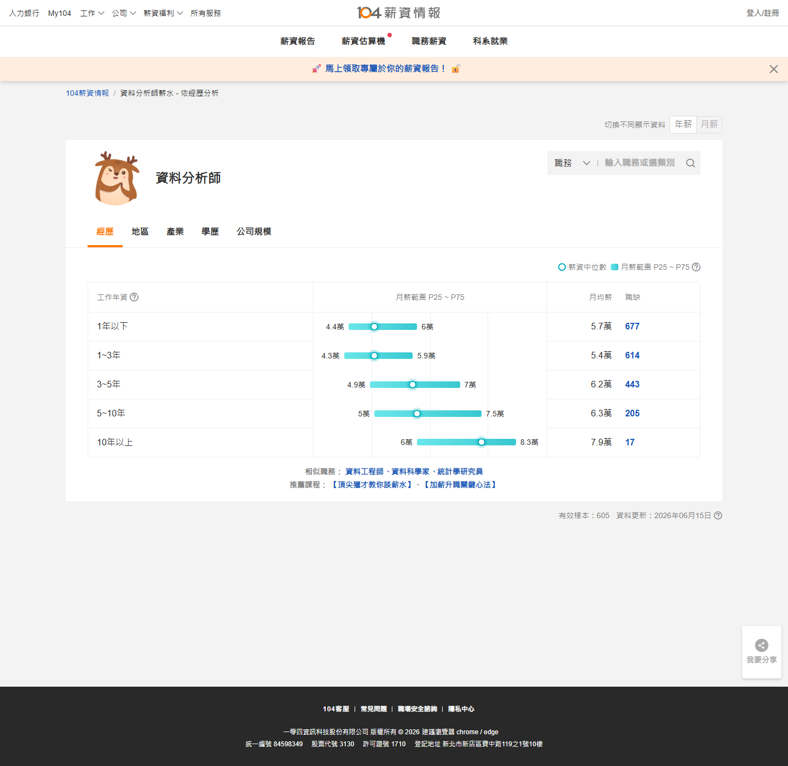
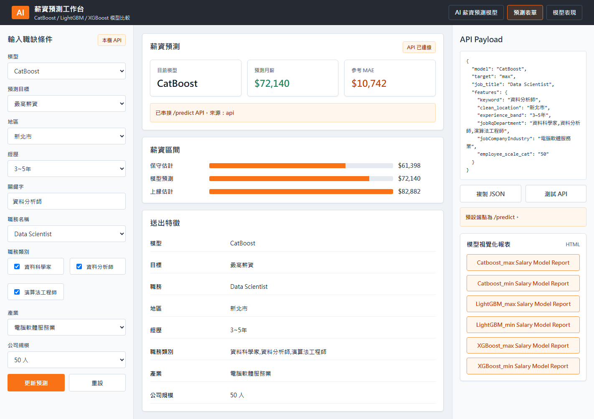

專題報告 / 外部驗證 / Dashboard
驗證完成
薪資模型外部驗證
以 104 薪資情報 P25～P75，比較模型 min～max 預測區間
資料來源：salary_model_validation.xlsx
驗證案例366 職務 × 3 地區 × 2 年資
▦
平均中點差距10.51%整體落差約一成
◎
區間重疊率100%36 / 36 案例有交集
↔
最佳案例0.43%資料分析師｜新北市
★
各職務平均中點差距
越低越接近市場最佳實際案例
MOST ACCURATE資料分析師中點差距 0.43%
新北市｜3～5年｜電腦軟體服務業｜50 人
104 市場區間$49,960 ～ $70,000
模型預測區間$47,301 ～ $72,140
外部驗證流程
5 STEPS01建立矩陣
02取得 104
03呼叫模型
04計算誤差
05判讀限制
限制訊號：DevOps 六組測試平均中點差距 28.95%，顯示模型對高薪、較少見職務可能低估。
代表案例
依中點差距排序| 職務 | 地區 | 年資 | 模型區間 | 差距 | 狀態 |
|---|---|---|---|---|---|
| 資料分析師 | 新北市 | 3～5年 | 47,301～72,140 | 0.43% | 高度接近 |
| 後端工程師 | 新竹市 | 3～5年 | 50,756～77,410 | 2.10% | 接近 |
| 資料分析師 | 台北市 | 1～3年 | 41,057～59,160 | 2.28% | 接近 |
外部驗證流程
從測試條件、104 市場基準到模型誤差判讀
5 Steps
01建立測試矩陣
6 種職務、3 個地區與 2 個年資層級，共 36 組案例。
02取得市場基準
使用 104 薪資情報的 P25～P75 作為外部市場區間。
03呼叫模型
使用 Dashboard 完整特徵，分別預測 min 與 max。
04計算誤差
比較 MAPE、中點差距率與兩個薪資區間是否重疊。
05判讀限制
找出模型適用範圍，以及高薪與少樣本職務的風險。
中點差距率
|模型區間中點 − 104 區間中點| ÷ 104 區間中點。越低代表模型預測越接近外部市場。
區間重疊率
模型 min～max 是否與 104 P25～P75 相交。36 組正式案例皆有區間重疊。
市場基準：104 薪資情報
資料分析師｜依年資分析
104 顯示資料分析師 3～5 年的月薪 P25～P75 約為 49,960～70,000 元，作為外部市場比較基準。
模型輸出：本系統預測結果
新北市｜3～5年｜CatBoost Max
使用完整 Dashboard payload 呼叫 CatBoost；Max 預測為 72,140 元，搭配 Min 47,301 元形成模型預測區間。
實際案例
完整 36 組驗證案例，依中點差距率由低到高排列
點選左側案例查看詳細比較
模型限制
外部驗證同時用來找出模型不可靠的情境
DevOps Stress Test
高薪、較少見職務可能低估
DevOps 六組壓力測試的平均中點差距為 28.95%，明顯高於正式 36 組案例的 10.51%。模型預測多數低於 104 市場區間。
104 樣本數也需判讀
DevOps 各年資層的 104 有效樣本僅約 11 筆。外部市場基準本身也可能因樣本較少而波動。
不同頁面的輸入不可混用
正式驗證使用 salary_dashboard.html 的完整 payload；首頁簡化版會自行進行職務分群，因此數字可能不同。
適用方式
結果適合作為薪資範圍參考，不應視為單一職缺的保證薪資。高薪或少見職務應顯示較低可信度提示。
DevOps Engineer 壓力測試案例
6 組| 案例 | 模型區間 | 104 區間 | 中點差距 | 區間重疊 |
|---|
結論：模型在常見科技職務上能提供具參考性的薪資範圍，但對高薪、較少見職務可能低估，使用時需搭配市場樣本數與完整職缺條件。